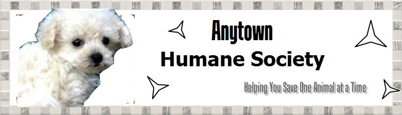

Anytown Humane Society
Menu
Home
Animals
Events
Donate
Contact Us

Our Mission
Our mission here at the Anytown Human Society is to provide care and aid to animals in need.
The cable car terminus near Union Square
 The cable car terminus near Union Square
The cable car terminus near Union Square